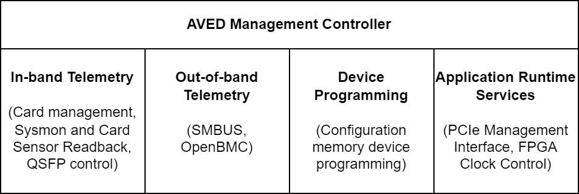
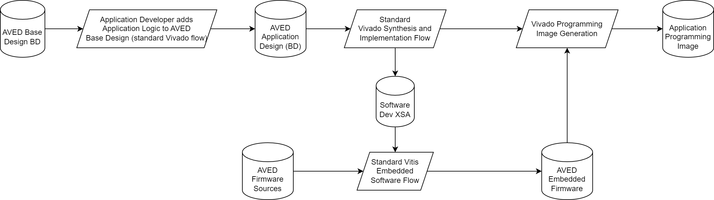

AMR Overview¶
New In This Release¶
Support for Vivado™ 2026.1 toolset.
Support for RHEL 9.4 with kernel 5.14, and Ubuntu 24.04 with kernel 6.8
Enhanced OSPI flash write performance optimization for faster device programming.
Partition flag read/write functionality for advanced flash management and partition control.
RPM package support for Red Hat distributions in addition to existing Debian packages.
Enhanced V80 board profile with eMMC storage support, SMBus interface, and QSFP module control.
Improved firmware architecture with board profile system supporting rave (standard reference) and v80 (enhanced) variants for flexible platform deployment
Obsolete Features¶
The following OS versions and kernels are no longer officially supported:
Ubuntu 22.04 with kernels 5.4.0 and 5.15.0
RHEL 8.3 with kernel 4.18.0
V70 board profile has been removed in favor of the unified rave (standard) and v80 (enhanced) board profiles
Supported Kernels and Distributions¶
| Operating System | Architecture | Supported Versions | Kernel-Version |
|---|---|---|---|
| Ubuntu | x86_64 | 24.04 | 6.8.0 |
| Ubuntu | x86_64 | 24.04.3 | 6.17.12 |
| RHEL | x86_64 | 9.7 | 6.19.3 |
Please note:
The Example Design has been tested with the operating systems in the above table.
AMR may work with other versions of these operating systems, but they have not been tested.
All supported operating systems are tested with general access versions (GA). Ubuntu Hardware Enablement (HWE) is not supported. By default, HWE is disabled by Ubuntu Server versions and enabled by desktop versions.
Introduction¶
This section contains an overview of the AMD Adaptive Management Runtime (AMR). AMR provides basic management capabilities for Alveo and Embedded+ boards featuring a Versal device connected to an x86 host via PCIe. The AMR has the following design components:
The base hardware design for establishing PCIe® host connectivity and logic for common system management operations.
AMC (Adaptive Management Controller): Firmware running on RPU-0 with FreeRTOS that implements a management interface to a companion host operating system driver and utility application so that the basic features of the card can be managed within the development and deployment systems.
AMI (Adaptive Management Interface): Host-side software including a kernel driver, API library, and CLI tool for interfacing with AMC firmware.
Build flow scripts including CMake-based firmware compilation and Vivado hardware design generation, demonstrating a full end-to-end build process for the base hardware design and software components described above.
Supported Platforms¶
Alveo V80¶
The Alveo V80 is a high performance data processing card in a PCIe form factor containing a Versal HBM FPGA device, DDR memory, and a variety of communication interfaces. The Alveo V80 has a broad range of market applications in high-performance compute, analytics, networking, storage, fintech, and blockchain. The following diagram provides a high level overview of the primary card features and interfaces. See the Alveo V80 Data Center Accelerator Card Data Sheet (DS1013) for information on the card and its capabilities.
{kind=link}
Rave (Standard Alveo Platform)¶
The Rave platform represents the standard reference implementation for Alveo boards featuring Versal devices. Rave provides essential PCIe connectivity and basic management capabilities suitable for a wide range of applications. Key characteristics include:
Single I2C bus configuration for device communication
EEPROM version 1.0 support for board information storage
Standard OSPI flash management for device programming
In-band telemetry via PCIe for card monitoring and control
Streamlined architecture optimized for standard Alveo deployment scenarios
The Rave profile serves as the baseline platform configuration, providing core functionality while minimizing complexity for applications that do not require advanced storage or expansion interfaces.
Adaptive Management Runtime¶
The AMR provides a robust starting point for application designers who wish to build and rapidly deploy solutions on Alveo V80 hardware. To support a broad range of markets, the AMR is delivered as a Vivado centric design with a well documented design architecture. The combination of the AMR base hardware design and companion software layers embodies Alveo’s best practice solutions to common application functions such as card management, device programming, and host to card data exchange. The following diagram shows an overview of the AMR in the context of the Alveo V80 FPGA resources.
{kind=link}
Some notable characteristics of the AMR include:
The AMR’s base design logic has been simplified to focus on the common set of card and application management functions, which increases the amount of available device resources for the user’s application.
The AMR is built on a Vivado centric design flow so that the application developer can leverage all of the available design optimizations in the Vivado software and IP libraries in their applications.
The AMR’s design flow produces full programming images for the FPGA, which simplifies the overall design flow and avoids other management overheads associated with dynamic function exchange.
The AMR’s firmware provides a reference implementation of card management functions for both in-band (PCIe) and out-of-band (SMBUS/BMC) sensor access and card control, plus other application-level card management functions. This includes writing new PDIs into the card’s OSPI flash configuration memory across three partitions (two boot PDIs and one user design), with enhanced write performance, partition flag management, and automatic partition loading on power-up.
The AMR supports two board profiles: rave (standard reference implementation) and v80 (enhanced with eMMC storage, SMBus interface, and QSFP module control), allowing flexible deployment across different Alveo and Embedded+ platforms.
AMR Hardware Architecture¶
The AMR includes platform-specific base hardware designs that demonstrate PCIe connectivity and management capabilities. For detailed information on the hardware architecture for each supported platform, please refer to:
V80 Hardware Architecture - Enhanced platform with eMMC, QSFP, and SMBus support
Rave Hardware Architecture - Standard reference platform architecture
AMR Software Architecture¶

The AMR management controller (AMC) is reference firmware targeted to run on the card’s RPU processors. The AMC firmware runs on RPU-0 under FreeRTOS and is organized into a layered architecture:
Firmware Abstraction Layer (FAL) providing protocol-agnostic hardware interfaces for OSPI, eMMC, SMBus, GCQ, and UART.
Operating System Abstraction Layer (OSAL) enabling OS portability.
Core libraries including Event Library (EVL) for event-driven architecture, Debug Access Library (DAL), and Printing/Logging Library (PLL).
There are four major groups of functionality provided in this reference firmware implementation:
Monitoring of card sensor state and other low level card control behaviors are provided in the form of an in-band (PCIe®) telemetry interface.
A remote management interface that is built on standard communication protocols (SMBus) to interface and service requests from well known server management software infrastructure, such as OpenBMC.
To support application development and later deployment, AMC also provides services to program and inspect the card’s OSPI flash configuration memory across three partitions (two boot PDIs and one user design), with enhanced write performance and partition flag management.
A companion application (ami_tool) allows access to application runtime services (for example clock management) to cards with AMR-derived designs in the system via the PCIe host driver provided as part of the AMR Management Interface) (AMI).
AMR Design Flow¶
As a Vivado™-centric design, the AMR is built on the same standard design flows that are well known to the broad community of Vivado and Versal™ application developers. Because AMR includes a hardware base design and firmware images, AMR’s design’s source files are delivered in a particular source directory structure. A shell script is provided to encapsulate the complete build flow from end to end.

The diagram above shows a high level overview of the AMR build process. Notable aspects of the build process are:
Use of familiar Vivado design steps (capture of design in IP integrator, synthesis and implementation) with Vivado 2026.1 toolset and CMake-based firmware compilation for generation of the application programming image.
AMR base design BD reused as the starting point for the application design BD.
Use of Vitis™ embedded software flow to compile AMR firmware image for inclusion into final programming image.
Profile-based configuration system enabling different board variants (rave for standard Alveo, v80 for enhanced platforms) to be built from a unified source tree.